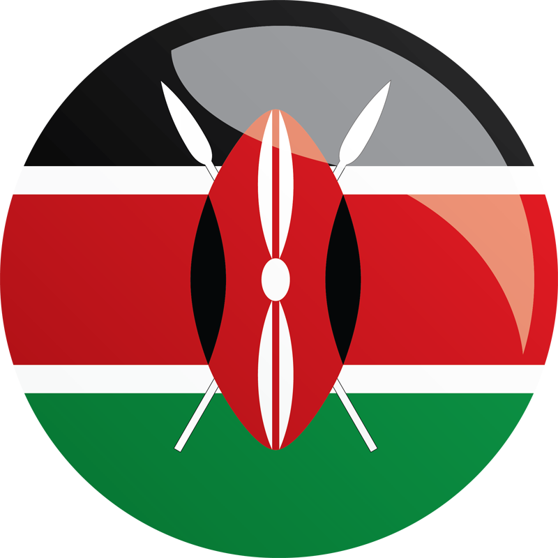
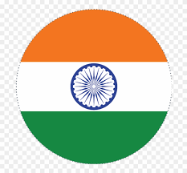
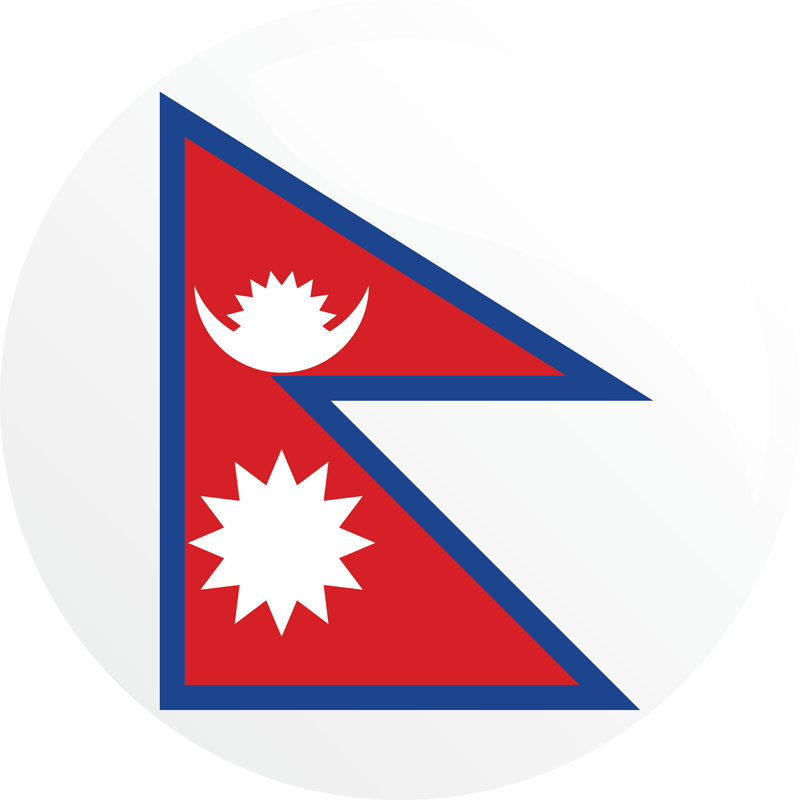
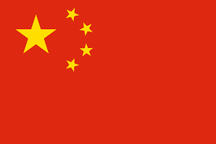
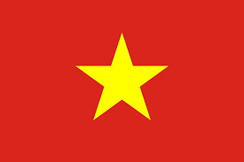
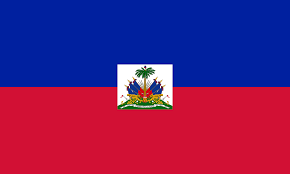

 Kenya
Twinings & BSR implementing HERhealth to reach tea workers and smallholder farmers.
Takeda implementing HERhealth with BSR
Marks & Spencer partnered with VP Group & BSR to implement HERhealth at 11 farms and packhouse sites.
The Danish Family Planning Association, an NGO, with local partners, is implementing workplace programs with companies in Kenya and Uganda in the garment, pharma, flower and security sectors, reaching 6,630 employees with sexual and reproductive health information or services.
Burkina Faso
Marie Stopes Burkina Faso works with UNFPA to train memebers of the cotton growers' associations, who produce cotton for Sofitex and are men, to conduct sensitization sessions on family planning with their peers, to take home information to their wives, and to make referrals to family planning services, reaching 11,000 workers and their families.
Ethiopia
Kombolcha Textile Factory in Ethiopia, which produces bed sheets and employs more than 2,200 workers, half of whom are women, partnered with IPPF's Ethiopia, Family Guidance Association of Ethiopia, to set up clinics for workers delivering a range of sexual and reproductive health services.
Takeda implementing HERhealth with BSR
Gap Inc. & CARE implementing P.A.C.E.
IPPF's Family Guidance Association of Ethiopia ( FGAE) works with over 150 businesses in Ethiopia ranging from textile and garment factories, and flower and horticultural farms including coffee plantations to engineering and automotive industries and cement factories, reaching 30,000 workers with reproductive health information services.
- Click here for more information on IPPF's Family Guidance Association of Ethiopia
- Click here to contact IPPF
Marie Stopes, supported by the Embassy of the Kingdom of the Netherlands, has worked with 18 manufacturing companies including flower and herb farms, leather and textile factories, pharmaceutical factories, and sugar factories to train health workers to provide on-site reproductive health counseling and services to employees, reaching 23,037 female workers.
Egypt
Levi Strauss & Co. implementing their Worker Well-being initiative
MTV Staying Alive Foundation & Viacom International Media Networks launching television show addressing youth sexual health
India
Levi Strauss & Co. implementing the Worker Well-being initiative
Jabil plans to partner with BSR to implement HERhealth
Columbia Sportswear Co. & BSR implementing HERhealth
Lindex & BSR implementing HERhealth, plans to partner with BSR & GIZ to implement WE WOMEN
ANN INC. & BSR implementing HERhealth
Gap Inc. implementing P.A.C.E.
Li&Fung & BSR implementing HERhealth and HERfinance
Takeda implementing HERhealth with BSR
Marks & Spencer & BSR implementing HERrespect to provide gender equality training and improve health
MTV Staying Alive Foundation & Viacom International Media Networks launching television shows addressing youth sexual health.
The Tata Trusts, supported with profits from the Tata companies investing $10 million to provide access to reproductive, maternal, newborn, child, and adolescent health services.
Spark Minda & Pathfinder International partnering to provide reproductive health, including family planning and menstrual hygiene, workshops to worker in supply chain.
- Click here for more information on Spark Minda & Pathfinder International
- Click here to contact Pathfinder International
IPPF's Family Planning Association of India (FPA India) works with construction workers and power loom operators to provide counseling and testing for sexually transmitted infections and HIV as well as support for wider occupational health issues. FPA India also works with the Association of Power-Loom Owners to ensure workers have access to health services.
Swasti partnered with over 120 factories to implement worker wellbeing initiatives to improve health; including sexual and reproductive health and rights and WASH; reduce gender-based violence; and improve life skills and gender equality.
Nepal
Chaudhary Foundation, philanthropic arm of CG Corp Global, partner with Government Nepal to strengthen family planning uptake.
Bangladesh
Levi Strauss & Co. implementing their Worker Well-being initiative
Auchan Retail through its foundation-led Weave Our Future program implementing women's health and empowerment programs.
Lindex & BSR implemented HERhealth, now with BSR & GIZ launching WE WOMEN, a program to provide technical, financial, and health training to garment workers.
ANN INC. & BSR implementing HERhealth
Gap Inc. & CARE implementing P.A.C.E.
Li&Fung &BSR implementing HERhealth and HERfinance
Takeda supporting BSR's implementation of HERhealth and factory improvement.
Walmart Foundation & CARE partnered to implement the Women in Factories Initiative to empower garment workers with the life skills on communications, hygiene, reproductive health, occupation health and safety, gender sensitivity, and leadership training to support career development, reaching 50,000 workers in 150 factories.
GlaxoSmithKline, Marks & Spencer & CARE are partnering to implement Health Access and Linkage Opportunities for Workers ( HALOW) to reach garment workers with health, hygiene, and nutrition information; improve factory clinics; and connect workers with health services.
Galaries Lafayette & CARE are partnering to implement the Promoting and Enabling Environment for Women in Factories program which provides health and empowerment training to workers and their supervisors, trains peer facilitators, builds capacity of worker committees to support dialogue, and coordinates with health providers to ensure delivery of services to workers.
MSI, with support from Embassy of the Kingdom of the Netherlands, works with the readymade garment factories and other industries including rice mills, brick kiln factories, jute mills, cement factories, and shrimp cultivation and export processing companies to train company management on the importance of sexual and reproductive health and women's empowerment, increase provisions of reproductive health information to workers, and improve referrals for health services, reaching 20,000 factory workers.
CARE, the European Union & Austrian Development Agency are partnering to implement the OIKKO program to increase the influence of female garment workers, organized labor, and civil society. Trainings include reproductive and sexual health and empower workers to negotiate for access to needed services.
Pathfinder's Health Service Delivery Project, funded by USAID and DflD, trains health workers at garment factory clinics on reproductive health and provides information to factory owners, managers and staff, serving 9,327 women workers in 13 clinics.
Swasti supported scale up of P.A.C.E.
The Population Council partnered with BSR to evaluate HERhealth in 10 factories, including four comparison factories, finding positive impacts on reproductive health knowledge and behaviors.
Meridian International, Inc. with ILO/IFC Better Work program, BSR, and brands is making health education materials on family planning, hygiene and engaged fatherhood easily available in factories.
Myanmar
Lindex plans to partner with BSR and GIZ to implement WE WOMEN
Gap Inc. & CARE implementing P.A.C.E.
China
Jabil & BSR implementing HERHealth
Levi Strauss & Co. implementing the Worker Well-being initiative
Columbia Sportswear Co. & BSR implementing HERHealth
Lindex plans to partner with BSR and GIZ to implement WE WOMEN
ANN INC. & BSR implementing HERhealth
Gap Inc. implementing P.A.C.E.
Takeda implementing HERhealth with BSR
Qualcomm partnering with BSR to create a mobile app to provide workers with health information and connect them with services.
Swasti supported scale up of P.A.C.E.
Pathfinder International and UC Berkeley promote sexual and reproductive health for migrant workers' in 30 factories, serving 25,000 workers.
Indonesia
ANN INC. & BSR implementing HERhealth
Columbia Sportswear Co. & BSR implementing HERhealth
Gap Inc. & CARE implementing BSR HERhealth
The Indonesia Planned Parenthood Association ( IPPA) collaborates with a range of major employers from garment to show factories, hospitality and construction, to plantation and a local airline to 45,000 workers with reproductive health information services.
Swasti supported scale up of P.A.C.E.
Vietnam
Levi Strauss & Co. implementing their Worker Well-being initiative
Jabil partnering with BSR to implement the HERhealth program
Columbia Sportswear Co. & BSR implementing HERhealth
ANN INC. & BSR implementing HERhealth
Auchan Retail through its foundation-led Weave Our Future program implementing women's health and empowerment programs.
- Click here for more information on Auchan Retail and Weave Our Future
Gap Inc. & CARE implementing P.A.C.E.
Li&Fung & BSR implementing HERhealth and HERfinance
Marks & Spencer & BSR implementing HERhealth
IPPF's Vietnam Family Planning Association (VINAFPA) works with more than 20 companies to provide sexual and reproductive health information and services to 21,000 workers in the clothing, footwear and canned food industry.
Marie Stopes Vietnam has partnered with Pou Chen Group- the largest branded athletic and casual footwear manufacturer in the world producing for major brands such as Nike, Adidas, Asics, Clarks, Reebok, Puma, New Balance, Crocs, Merrell, Timberland, Converse and Salomon - providing sexual and reproductive health information to 491,000 female workers services to over 50,000 female workers.
Swasti supported scaled up of P.A.C.E
 Mexico
Mexico
Gap Inc. implementing P.A.C.E.
Haiti
Share Hope & BSR implementing HERhealth
Levi Strauss & Co. implementing HERhealth
- Click here for more information about Levi Strauss & Co. and HERhealth
- Click here to contact HERhealth
Gap Inc. & CARE implementing P.A.C.E
Philippines
NST/Hamlin partnering with UNFPA to provide garment workers with information and services on family planning, maternal health, and basic health care.
CARD-MRI partnering with UNFPA to provide women in micro-finance network with reproductive health information and services.